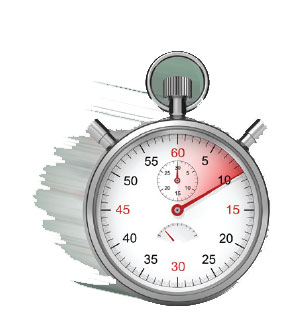
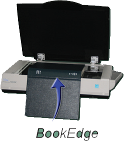

Out with the Old and In with the New
The sequence above shows just how much work is required to use a face-down scanner to scan multiple pages.In contrast, the sequence on the left shows the relative speed and ease of face-up scanning systems that do not require the user to flip over the book being scanned. Once placing the book, the user simply turns pages and presses the scan button (or foot pedal) to scan two pages at a time
Seven Complete Configurations to Choose From
BSCAN ILL can be purchased separately or as a complete system with the following exceptional book digitization equipmentThree Things You Should Know About ILL Digitization Equipment
1.SPEED
All of the systems that DLSG bundles with BSCAN ILL are quite fast, but our face up scanners are the fastest. By eliminating the need to flip the volume repeatedly, our face-up scanners are up to 5 times faster than the fastest face-down scanners.
2.ONGOING SUPPORT & SERVICES
Digitization for ILL and digital document de- livery are production processes. It is impor- tant that they be backed by a reliable vendor team, and Image Access has an unmatched service and support record.
3.CAPTURING CONTENT DEEP INTO THE BOOK FOLD
Never Fail an Article Request Again
Bookeye MethodBookeyes follow the natural curve of the book when they scan. Good lighting is essential for good scanning, and Bookeye 4 scanners em- ploy two white LED light bars that sweep across the material.
 Click Method
Click Method
Click captures the left and right pages with two separate cameras positioned at ideal angles. An array of 420 individu- ally aimed white LED lights produce bright, evenly distrib- uted illumination from above and behind the scan bed, thus avoiding reflection.
 BookEdge Method
BookEdge Method
The BookEdge is a flatbed scanner with a specialized feature that easily captures close into the bookfold without damaging the spine.
